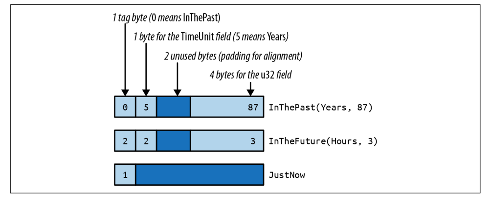
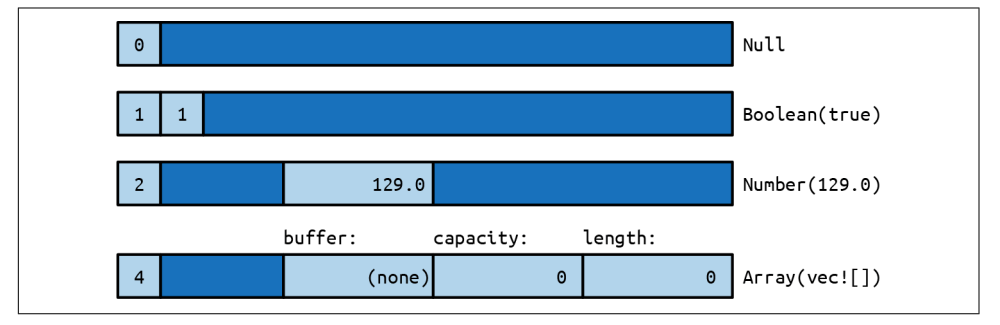
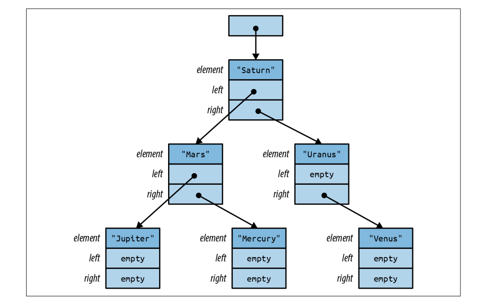
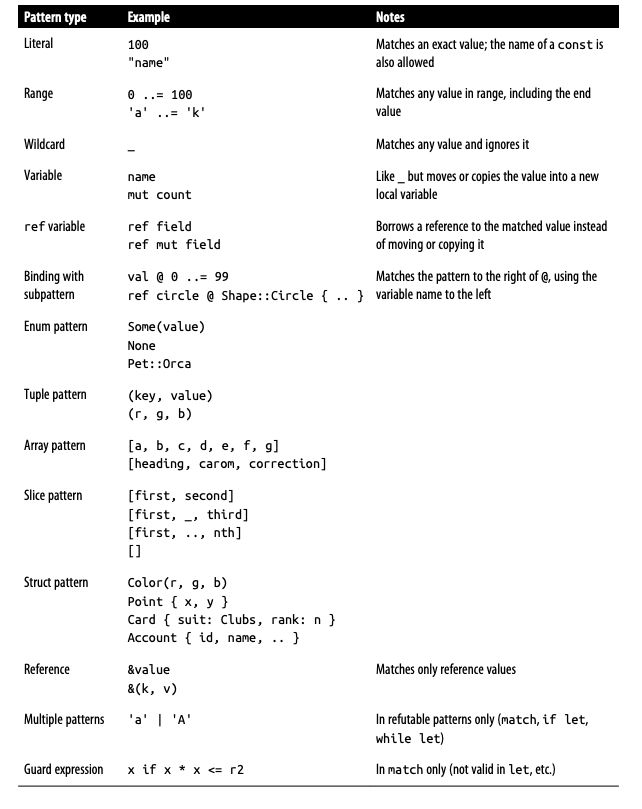

【Rust】枚举和模式匹配
在 Rust 中，枚举也可以包含数据，甚至是不同类型的数据。例如，Rust 的 Result<String, io::Error> 类型是一个枚举，这样的值要么是包含字符串的 Ok值，要么是包含 io::Error 的 Err 值。
只要 value 只有一种可能，枚举就很有用。使用它们的代价是你必须安全地访问数据，使用模式匹配就可以完成。Rust 模式有点像正则表达式，它们用于检测一个值是否是想要的，他们也可以将结构体或tuple中的多个字段提取到局部变量中。
枚举
来看一个标准库中枚举示例 std::cmp::Ordering，它有三种可能的值：Ordering::Less， Ordering::Equal 和 Ordering::Greater，称为变量或者构造函数：
1 |
|
我们在使用的时候可以直接导入：
1 | use std::cmp::Ordering; |
如果导入当前模块的枚举的构造函数可以使用 self：
1 | enum Pet { |
在内存中，C 风格的枚举值存储为整数，默认情况下，Rust 使用可以容纳它们的最小内置整数类型来存储 C 风格的枚举，大多是 1 字节，从 0 开始，但是也可以指定：
1 | enum HttpStatus { |
但是像上面的 404，1 byte 就不能容纳了：
1 | use std::mem::size_of; |
可以使用 #[repr] 属性覆盖 Rust 的选择，就像上面的 Ordering。
允许转换一个 C 风格的枚举值为整数，但是不能从整数转换为枚举值：
1 | assert_eq!(HttpStatus::Ok as i32, 200); |
与 C 和 C++ 不同，Rust 保证枚举值只是枚举声明中拼写的值之一。从整数类型到枚举类型的未经检查的强制转换可能会破坏此保证，因此是不允许的。可以编写自己的转换函数：
1 | fn http_status_from_u32(n: u32) -> Option<HttpStatus> { |
或者使用 enum_primitive。
像结构体一样，可以让 enum 自动派生内置 trait，实现比较等运算符：
1 |
|
与其他语言不同的是，Enums 可以有自己的方法，就像结构体：
1 | impl TimeUnit { |
枚举数据
枚举值可以带带参数，第一种就像 tuple结构体，这些枚举值就像构造函数一样可以创建枚举变量：
1 | enum RoughTime { |
第二种枚举值就像结构体，参数可命名：
1 | enum Shape { |
总之，Rust 有 3 种枚举，与 3 种 struct 相呼应，没有数据的枚举对应于类似 unit 结构体。单个枚举可以同时拥有这3种类型：
1 | enum RelationshipStatus { |
内存表示
在内存中，带有数据的枚举被存储为一个小的整数标签，加上足够的内存来保存最大变体的所有字段。tag 字段供 Rust 内部使用，它告诉哪个构造函数创建了该值以及它具有哪些字段。

然而，Rust 没有对枚举布局做出任何承诺，以便为未来的优化敞开大门。在某些情况下，打包枚举的效率可能比图中所示的要高。
Json 示例
我们来看如何在代码中表示 JSON 数据，JSON 一共有 6 中数据类型：NULL，Boolean(bool)，Number(f64)，String(String)，Array(Vec<Json>)，和 Object(Box<HashMap<String, Json>>)：
1 | use std::collections::HashMap; |
关于 json 解析，可以查看 serde_json，crates.io 上最流行的库。
代表 Object 的 HashMap 周围的 Box 仅用于使所有 Json 值更紧凑，在内存中，Json 类型的值占用了 4 个机器字。 String 和 Vec 值是3个字节，Rust 增加了1个标记字节。Null 和 Boolean 值中没有足够的数据来用完所有空间，但所有 Json 值必须具有相同的大小，多余的空间未被使用。下图展示了 Json 值在内存中的布局，Box<HashMap> 是一个字：它只是一个指向堆分配数据的指针，我们通过 Box 使 Json 更加紧凑。

泛型枚举
枚举也可以是泛型的，这里有两个常用的例子 Option 和 Result，和结构体的语法比较相似：
1 |
|
当类型 T 是引用、Box 或其他智能指针类型时，Rust 可以消除 Option<T> 的 tag 字段。 由于这些指针类型都不允许为零，Rust 可以将 Option<Box<i32>> 表示为单个机器字：0 表示无，非零表示 Some 指针。这使得此类 Option 类型非常类似于可能为空的 C 或 C++ 指针值。不同之处在于，Rust 的类型系统要求在使用其内容之前检查选项是否为 Some，这就避免了解引用空指针。
只需几行代码即可构建通用数据结构：
1 |
|
这几行代码定义了一个可以存储任意数量的 T 类型值的 BinaryTree，每个 BinaryTree 要么为空要么不为空。如果是空的，那么什么数据都不包，如果不为空，那么它有一个 Box，包含一个指向堆数据的指针。
每个 TreeNode 值包含一个实际元素，以及另外两个 BinaryTree 值。这意味着树可以包含子树，因此 NonEmpty 树可以有任意数量的后代。BinaryTree<&str> 类型值的示意图如下图所示。与 Option<Box<T>> 一样，Rust 消除了 tag 字段，因此 BinaryTree 值只是一个机器字。

构建这样一棵树可以用如下代码完成：
1 | use self::BinaryTree::*; |
大树可以由小树构成：
1 | let mars_tree = NonEmpty(Box::new(TreeNode { |
枚举的缺点是访问里面的数据必须使用 match 模式匹配。
模式匹配
假设有一个 RoughTime 值，需要访问值内的 TimeUnit 和 u32 字段。Rust 不允许直接 rough_time.0 和 rough_time.1 直接访问它们，因为值可能是 RoughTime::JustNow，必须使用 match：
1 | enum RoughTime { |
匹配枚举、结构体或元组就像 Rust 正在做一个简单扫描一样，依次检查每个 pattern 是否匹配。一个模式包含一些表示符，就像 count 和 units，匹配之后，枚举值内容都会被移动会复制到这些局部变量中，这些局部变量只能在当前模式中使用。
Rust 的模式匹配除了匹配枚举值，还能匹配很多类型的数据，如下表所示：

字面量、变量、通配符
数值，字符，bool，字符串都可以用于模式匹配，例如：
1 | match meadow.count_rabbits() { |
这里的 n 和 other 都用于匹配其他的情况，可以使用 _ 捕获剩余所有情况：
1 | let caption = match photo.tagged_pet() { |
要注意的是，Rust 中，必须为 match 列出所有可能情况，_ 通常用来处理剩余的情况。
tuple、结构体匹配
tuple模式匹配元组，当你想要在单个匹配中获取多条数据时，它们很有用：
1 | fn describe_point(x: i32, y: i32) -> &'static str { |
结构体模式使用花括号，就像结构体表达式一样。 它们包含每个字段的子模式：
1 | match balloon.location { |
在这个例子中，如果第一个模式匹配上，那么 balloon.location.y 将存储在 height 中。像 Point { x: x, y: y } 这样的模式在匹配结构体时很常见，冗余的名称在视觉上很混乱，所以 Rust 有一个简写：Point {x, y}， 意思是一样的。这种模式仍然将 Point 的 x 字段存储在新的本地 x 中，并将其 y 字段存储在新的本地 y 中。
即使使用简写，当我们只关心几个字段时，匹配一个大型结构也很麻烦：
1 | match get_account(id) { |
为了避免这个，可以使用 .. 去告诉 Rust 不要关心剩余的字段：
1 | Some(Account { name, language, .. }) => |
数组、切片匹配
模式可以匹配数组，例如：
1 | fn hsl_to_rgb(hsl: [u8; 3]) -> [u8; 3] { |
切片模式类似数组，不同的是切片具有可变长度，因此切片模式不仅匹配值，还要匹配长度，.. 用于匹配任意数量的元素：
1 | fn greet_people(names: &[&str]) { |
ref 和 &
匹配不可复制的值会转移所有权，例如下面这段代码编译失败：
1 | match account { |
在这里，字段 account.name 和 account.language 被移动到局部变量 name 和 language 中，的其余部分被删除，这就是为什么我们不能在之后借用它。如果 name 和 language 都是可复制的值，Rust 会复制字段而不是移动它们，这段代码就可以了。但是如果这些是字符串，就需要一种借用匹配值而不是移动它们的模式，ref 关键字就是这样做的：
1 | match account { |
现在局部变量 name 和 language 是对 account 中相应字段的引用，由于 account 只是被借用而不是被消耗，因此可以继续对其调用方法。可以使用 ref mut 借用 mut 引用：
1 | match line_result { |
模式 Ok(ref mut line) 匹配任何成功结果，并借用 mut 引用存储在其中的成功值。
之前我们都是匹配的值，现在假如我们要匹配一个引用，假设 sphere.center() 返回 Point3d 的地址，例如 &Point3d { x: 0.0, y: 0.0, z: 0.0 }，我们就得这样做：
1 | match sphere.center() { |
要记住的是，模式和表达式是自然对立的。表达式 (x, y) 将两个值组合成一个新的元组，但模式 (x, y) 则相反，它匹配一个元组并分解这两个值，& 也一样，在表达式中，& 创建一个引用，在一个模式中， & 匹配一个引用。
匹配引用遵循我们所期望的所有规则，无法通过共享引用获得 mut 访问权限。当我们匹配 &Point3d { x, y, z } 时，变量 x、y 和 z 接收坐标的副本，而原始 Point3d 值保持不变。它之所以有效，是因为这些字段是可复制的。如果我们在具有不可复制字段的结构上尝试同样的事情，我们会得到一个错误：
1 | match friend.borrow_car() { |
但是我们可以使用 ref 获得对他的引用：
1 | Some(&Car { ref engine, .. }) => // ok, engine is a reference |
让我们再看一个 & 模式的例子。假设我们对字符串中的字符有一个迭代器 chars，并且它有一个方法 chars.peek()，它返回一个 Option<&char>：对下一个字符的引用。程序可以使用 & 模式来获取指向的字符：
1 | match chars.peek() { |
条件模式
可以在 pattern 和 => 之间使用 if CONDITION 来决定是否匹配，例如：：
1 | match point_to_hex(click) { |
如果匹配成功，但是条件未达到，就会继续匹配下一个。
匹配多种可能
竖线 | 可用于在单个匹配中组合多个模式：
1 | let at_end = match chars.peek() { |
在表达式中，| 是按位或运算符，但在这里它更像正则表达式中的 |，chars.peek() 匹配任何三种模式之一都会返回 true。另外可以使用 ..= 匹配整个范围的值，范围模式包括开始和结束值，所以 '0' ..= '9' 匹配所有 ASCII 数字：
1 | match next_char { |
Rust 目前不允许在模式中使用 0..100 这样的不包含结束符的范围。
@ 绑定
使用 x @ pattern 在匹配成功时会创建一个变量，将匹配到的整个值 copy 进去或者移动所有权，看这样一个示例代码：
1 | match self.get_selection() { |
第一个例子，解构 Shape::Rect 然后又构建了一个，我们可以使用 @ 来完成这个目的：
1 | rect @ Shape::Rect(..) => { |
@ 也用于范围绑定：
1 | match chars.next() { |
模式的其他用途
模式匹配除了应用于 match，也可以应用与 tuple，struct 以及 HashMap 解构：
1 |
|
还可以应用于我们之前学习到的 if let 和 while let 模式：
1 | // ...handle just one enum variant specially |